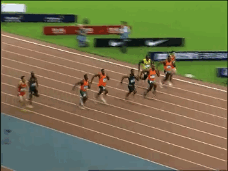

Materials needed for Track and Field
To be number one, you have to train like you're number two.
Track is about pushing yourself pass and beyond your limits when ever you run, which should be everyday.
Track isnt about always being in first place its about beating your time.
Hard work beats talent when talent doesn't work hard.
Your time tells you ever thing it shows you your rank it shows you do you have higher times than other people.
It also showes you your rank time over the event that you do.
I mean by this is so you run the 1600 event and you want to practice it when you are done you put down your time for ever time you run so you can see if your time is getting faster or slower.
You can also put down your time for each lap so you can see how fast or slower you get each lap.
Mental will is a muscle that needs exercise, just like muscles of the body.
This describes the pure essence of why we run. Spoken about Roger Bannister, the first man to break the 4-minute mile.
"One late afternoon, after swimming in a lake, he began to jog around to ease his chill. Soon enough he found himself running for the sheer exhilaration of it, across the moor and toward the coast. The sky filled with crimson clouds, and as he ran a light rain started to fall. With the sun warming his back, a rainbow appeared in front of him, and he seemed to run toward it. Along the coast the rhythm of the water breaking against the rocks eased him, and he circled back to where he had begun. Cool, wet air filled his lungs. Running into the sun now, he had trouble seeing the ground underneath his feet, but still he rushed forward, alive with the movement. Finally spent as the sun disappeared from the horizon, he tumbled down a light hill and rested on his back, his feet bleeding, but feeling rejuvenated. He needed to reconnect to the joy of running, to get away from the tyranny of the track"
